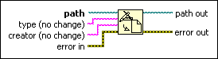

Set Type and Creator Function
Owning Palette: Advanced File VIs and Functions
Requires: Base Development System
Sets the type and creator of the file specified by path. type and creator are four-character strings. This function does not work for files inside an LLB.
Only macOS supports setting the type and creator of files.

 Add to the block diagram Add to the block diagram |
 Find on the palette Find on the palette |